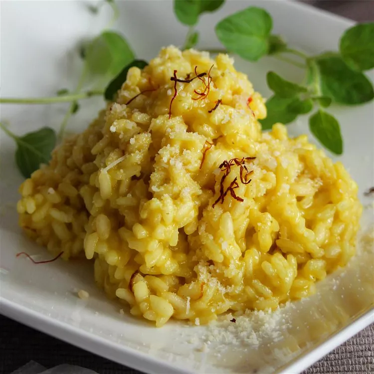

French Cuisine
French cuisine is known worldwide for its elegance, tradition, and flavor. From buttery croissants and fresh baguettes to classic onion soup, escargots, and crème brûlée, every dish tells a story of culture and art.



Tasty Tales is a journey through the world’s cuisines, where every dish carries a story. From the elegance of French pastries to the bold spices of Asian dishes, our goal is to share the flavors, traditions, and histories that make food more than just a meal.
French cuisine is known worldwide for its elegance, tradition, and flavor. From buttery croissants and fresh baguettes to classic onion soup, escargots, and crème brûlée, every dish tells a story of culture and art.
Italian cuisine is famous for its rich flavors and simplicity. Dishes like pizza, pasta, risotto, and gelato bring families together and celebrate the tradition of fresh, local ingredients.
Japanese cuisine is celebrated for its balance, freshness, and artful presentation. From sushi and ramen to tempura and matcha desserts, it reflects harmony between tradition and innovation.